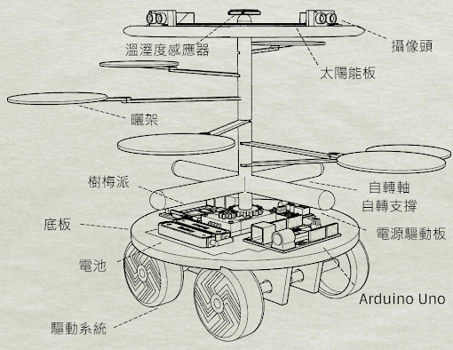

柿餅曬製機
搭配遠端控制app
搭配遠端控制app
柿餅曬製機配有

設計成六面體（四面），添加遮罩可有效避免收縮時遭雨水滴溼，並利用麥克納姆輪來達成自轉360度全範圍曬架，運用設計成雙層以分開驅動系統和曬架系統。
柿餅曬製機選用了全向輪作為移動模組， 全向輪可以在不旋轉機體的情況下進行全方位的移動， 這可以避免柿餅因為慣性的晃動而翻滾或跑位， 缺點則為在進行移動時會因為全向輪的輪面不平整而產生震動。